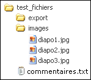

Si le stockage et l'accès à des données se fait très souvent
par l'intermédiaire de bases de données, le recours à de simples
fichiers est parfois utile, voire nécessaire.
Comme à son habitude, PHP fournit un grand nombre de
fonctions pour traiter les fichiers.

Pour les exemples, nous utiliserons le dossier test_fichiers
avec le contenu et l'arborescence ci-contre.
Ce dossier se trouve dans le dossier test du tutoriel. Vous pouvez
voir son contenu avec le bouton  dans la
barre de menu du tutoriel.
dans la
barre de menu du tutoriel.
Si vous ne voyez pas ce dossier, ou si vous voulez le ré-initialiser
utilisez
ce script.
Existence d'un fichier
Nous commencerons par déterminer si un fichier existe avec la
fonction file_exists().
La fonction file_exists()
ne différencie pas les fichiers ordinaires des dossiers. Si nous
l'utilisons avec un chemin vers un dossier, elle renverra aussi TRUE si le dossier existe, FALSE sinon. Notre dossier test_fichiers contient un
sous-dossier images et un sous-dossier
export. Si nous passons ces dossiers comme
paramètre à file_exists(),
le résultat sera TRUE.
Dossier ou fichier ordinaire ?
Heureusement, des fonctions nous indiquent quel est le type
d'un fichier, et en particulier : is_dir()
et is_file().
Chemin d'accès
Sur les systèmes Unix, un chemin absolu est un chemin exprimé à partir de la racine du système de fichiers
(/), et donc qui commence par un /.
Exemple : /var/www/html/php_tuto/test/test_fichiers
Tout chemin qui ne commence pas par un / est
un chemin relatif exprimé par rapport au répertoire courant; le répertoire courant étant
le répertoire dans lequel on se trouve.
Dans tout répertoire, le lien . désigne le répertoire lui-même;
et le lien .. désigne son répertoire parent.
Tous les scripts que vous lancez depuis ce tutoriel ont pour répertoire courant le répertoire
test situé dans le répertoire php_tuto.
Tous les chemins suivants sont des chemins relatifs valides désignant le fichier commentaires.txt,
par rapport au répertoire test :
test_fichiers/commentaires.txt
./test_fichiers/commentaires.txt
../test/test_fichiers/commentaires.txt
Nous pouvons obtenir le chemin d'accès canonique absolu d'un
fichier avec la fonction realpath().
Cette fonction résout les liens symboliques.
Etant donné qu'elle retourne un chemin canonique absolu, elle supprime les "portions"
comme /./, ../rep, et l'éventuel
/ à la fin du chemin.
Cette fonction renvoie false si le fichier n'existe pas.
La fonction dirname() renvoie un chemin après avoir
supprimé la composante finale du chemin passé en paramètre. La fonction basename()
renvoie la composante finale du chemin passé en paramètre.
La fonction pathinfo()
renvoie des informations sur un chemin sous la forme d'un tableau
associatif de quatre clés : dirname, basename, extension
et filename.